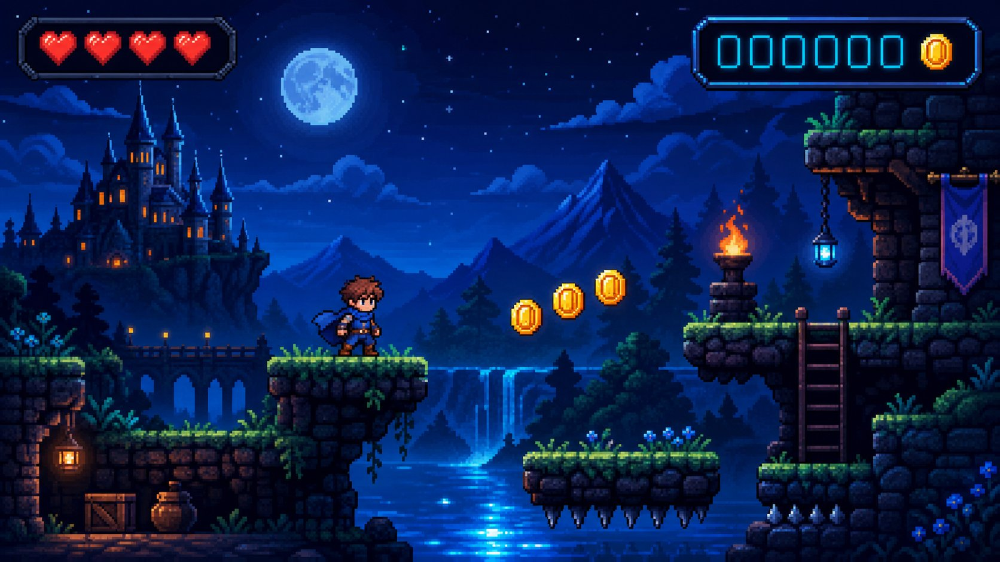

Pregunta 01
Una variable és…
Solució: B. Eixa és la imatge mental del curs: caixa + nom + valor modificable.
Un videojoc ha de recordar els teus punts; una tenda, els seus preus; el teu mòbil, la teua edat. Hui aprenem on guarda les dades un programa: les variables.
Material creat per Agustín Gil - IES La vereda 2026 · Llicència CC BY-NC 4.0
Estàs jugant una partida i portes 1.250 punts, 3 vides i el nivell 4. Si el joc no recordara eixos números, no existiria la partida. En programació, eixa memòria amb etiqueta té nom: variable. I si l'usuari posa una altra cosa? El programa ho ha de tindre tot previst… anem a veure-ho.

int, double, boolean, char i String.+ - * / % i concatenar text.Scanner.Imagina caixes d'emmagatzematge amb una etiqueta: dins hi cap una sola cosa alhora, i l'etiqueta diu el nom. En Java, a més, cada caixa té una forma: n'hi ha per a enters, per a decimals, per a text… Això és el tipus.
| Tipus | Què guarda | Exemple del teu món |
|---|---|---|
int | Enters | edat, punts, seguidors |
double | Decimals | nota mitjana, preu, temperatura |
boolean | true / false | «connectat?», «premium?» |
char | Un caràcter | la inicial del teu nom, un grup 'B' |
String | Text (entre cometes dobles) | nom, cançó, usuari d'una xarxa |
Declarar és crear la caixa (int punts;); assignar és ficar-hi la dada (punts = 1250;). Es pot fer tot junt. I ací està la gràcia: el valor pot canviar mentre el programa roda.
public class Partida {
public static void main(String[] args) {
int punts = 0; // declaració + assignació
punts = 1250; // modifiquem el valor
punts = punts + 250; // guanyem 250 punts més!
double temperatura = 36.5;
boolean connectat = true;
char grup = 'B'; // un caràcter: cometes SIMPLES
String nom = "Andrea"; // text: cometes DOBLES
System.out.println(nom + " porta " + punts + " punts");
}
}int diners = 20;
int preu = 7;
System.out.println(diners + preu); // 27 (suma)
System.out.println(diners - preu); // 13 (resta)
System.out.println(diners * preu); // 140 (multiplicació)
System.out.println(diners / preu); // 2 (!!) divisió ENTERA
System.out.println(diners % preu); // 6 residu: el que "sobra"
double mitjana = (8.5 + 7 + 6.5) / 3; // amb decimals, divisió normalSi els dos números són int, Java fa divisió entera i es menja els decimals. Per a decimals de veres, cal que algun dels números siga double: 7.0 / 2 → 3.5. Este error costarà més d'un examen, ja ho veuràs.
El símbol +, quan hi ha text pel mig, enganxa en lloc de sumar: "Hola, " + nom. Java converteix sol els números a text quan els enganxes a una cadena.
Fins ara, les dades les posàvem nosaltres al codi. Ara li donem la volta: que les pose l'usuari. Scanner és una eina que llig del teclat.
import java.util.Scanner; // "importa" esta eina (de moment, copia-la tal qual)
public class Dades {
public static void main(String[] args) {
Scanner tec = new Scanner(System.in); // ja arribarem a què és això exactament
System.out.print("Quants punts has fet? ");
int punts = tec.nextInt(); // llig un enter del teclat
System.out.print("I el teu nom? ");
String nom = tec.next(); // llig una paraula
System.out.println("Enhorabona, " + nom + ": " + punts + " punts!");
}
}import i new Scanner(...) són paraules necessàries perquè la lectura funcione. De moment no necessitem entendre esta part; ja arribarem més avant. Hui, quedat amb això: nextInt() llig un enter, next() una paraula i nextLine() una línia sencera.
Construïm un programa real: cobres la paga, compres un joc i vols saber què et queda. Cada pas, compila i executa abans de seguir.
Crea el programa Carters.java amb dues variables: la teua paga (15 €) i el preu del joc (9.99 €). Quin tipus usem per als diners amb decimals?
double paga = 15;
double preuJoc = 9.99;Una tercera variable guarda el resultat de la resta. Imprimeix-la enganxada a un text.
double resta = paga - preuJoc;
System.out.println("Em queden " + resta + " euros");Amb Scanner, demana la paga i el preu en lloc de deixar-los escrits. Prova amb valors diferents: el programa ja serveix per a qualsevol compra.
Scanner tec = new Scanner(System.in);
System.out.print("Quanta paga tens? ");
double paga = tec.nextDouble();Si vols repartir la paga que et queda entre 3 amics a parts iguales (en euros sencers), quants euros sobren? Pista: %.
int euros = (int) resta; // pas a enters: ja ho veurem, no passa res
System.out.println("Sobren " + euros % 3 + " euros");7 / 2 dona 3, no 3.5.int ⇒ divisió entera.double o escriu 7.0 / 2.char c = "A"; peta.char vol cometes simples 'A'; String, dobles.Edat i edat són caixes diferents (o «cannot find symbol»).punts sense haver-lo declarat.+ - * / % — i ull amb la divisió entera.+ amb text enganxa (concatena).nextInt(), nextDouble(), next().puntsJoc, notaFinal.; al final de cada instrucció. Sempre.int i imprimeix suma, resta, multiplicació, divisió i mòdul.System.out.println("2 + 2 = " + 2 + 2);? Explica per què.F = C * 1.8 + 32, amb variables.Una variable és…
Quin tipus uses per a guardar la nota mitjana 7.25?
double. Amb int es perdria la part decimal.Quina línia està ben escrita?
String amb majúscula i el text entre cometes dobles, a la dreta del =.int a = 7; int b = 2; System.out.println(a / b); imprimeix…
a % b.System.out.println("1 + 1 = " + 1 + 1); imprimeix…
+ concatena: «1» i «1» s'enganxen. Per a sumar dins del text: "1 + 1 = " + (1 + 1).Per a llegir un número enter del teclat usem…
nextInt() per a enters; next() llig una paraula de text.int x = 5; x = x + 3; x = x * 2; — quant val x al final?
Quin valor és un boolean vàlid?
true o false.Volem guardar el residu de repartir 14 cromos entre 4 amics. Quin operador ho fa directament?
/ sabríem quants toca cadascú: 3.)Demana amb Scanner el preu d'un entrepà i el d'una beguda. Imprimeix el total i quant sobra si pagues amb 10 €.
import java.util.Scanner;
public class Compra {
public static void main(String[] args) {
Scanner tec = new Scanner(System.in);
System.out.print("Preu de l'entrepà: ");
double entrepa = tec.nextDouble();
System.out.print("Preu de la beguda: ");
double beguda = tec.nextDouble();
double total = entrepa + beguda;
System.out.println("Total: " + total + " euros");
System.out.println("Sobren: " + (10 - total) + " euros");
}
}Demana dues notes (decimals) i mostra la mitjana. Compte amb la divisió: volem decimals de veres!
import java.util.Scanner;
public class Mitjana2 {
public static void main(String[] args) {
Scanner tec = new Scanner(System.in);
System.out.print("Primera nota: ");
double n1 = tec.nextDouble();
System.out.print("Segona nota: ");
double n2 = tec.nextDouble();
double mitjana = (n1 + n2) / 2; // double: divisió normal
System.out.println("La teua mitjana és " + mitjana);
}
}Demana una temperatura en graus Celsius i mostra l'equivalent en Fahrenheit (F = C * 1.8 + 32).
import java.util.Scanner;
public class Termometre {
public static void main(String[] args) {
Scanner tec = new Scanner(System.in);
System.out.print("Temperatura en °C: ");
double celsius = tec.nextDouble();
double fahrenheit = celsius * 1.8 + 32;
System.out.println(celsius + " °C són " + fahrenheit + " °F");
}
}Demana nom, edat i punts rècord. Imprimeix una «fitxa» amb eixes tres dades i el doble dels punts.
import java.util.Scanner;
public class Fitxa {
public static void main(String[] args) {
Scanner tec = new Scanner(System.in);
System.out.print("Nom de jugador/a: ");
String nom = tec.next();
System.out.print("Edat: ");
int edat = tec.nextInt();
System.out.print("Punts rècord: ");
int punts = tec.nextInt();
System.out.println("=== FITXA ===");
System.out.println(nom + ", " + edat + " anys");
System.out.println("Rècord: " + punts + " (doble: " + punts * 2 + ")");
}
}En un bar: demana el total del compte i el percentatge de propina que vol deixar el client (per exemple, 10). Imprimeix quants euros són de propina i el total final. Pensa quins tipus uses i per què.
Demana una quantitat total de minuts (per exemple, 135) i mostra quantes hores i quants minuts són, usant / i %: «135 minuts són 2 h i 15 min».